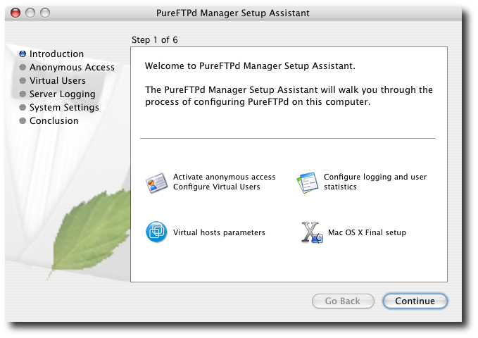
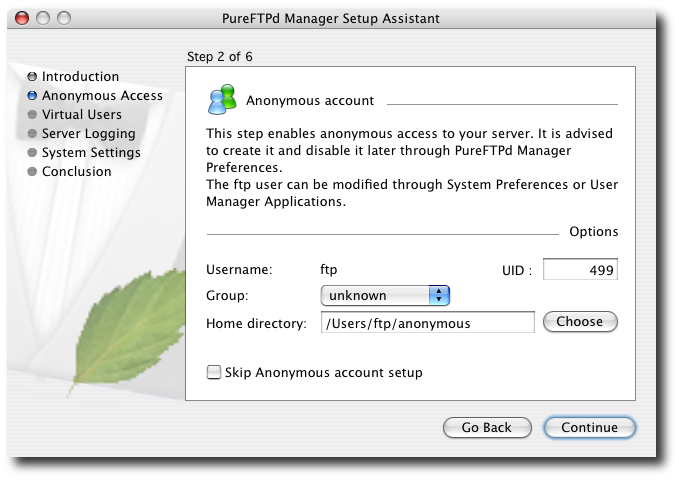
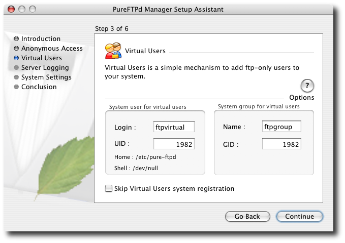
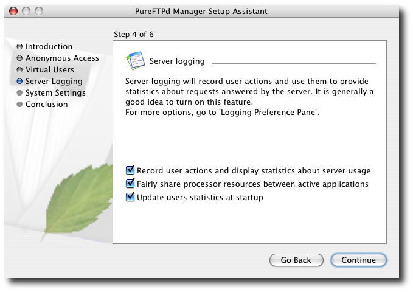
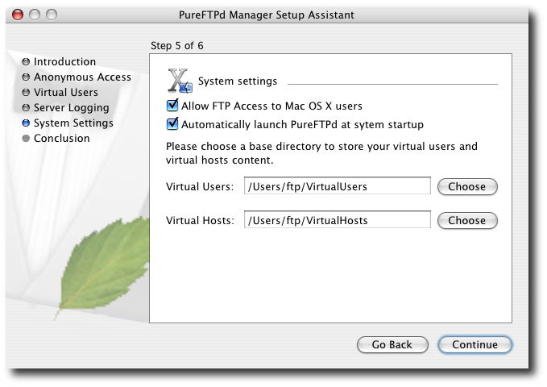
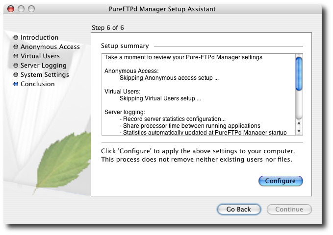

Setup AssistantWhen you launch PureFTPd Manager for the first time, it prompts you for your administrative password because its Setup Assistant will change some directories and needs the password to carry out those operations. After you log in, the Setup Assistant appears. As you work through the Setup Assistant, if you have specific knowledge of Unix user and group permissions, you might modify some of these settings. However, the defaults are quite good, and you should stick with them if you don't know what you are doing. Also, you can skip any step by checking the Skip checkbox (most likely only in cases where you previsouly setup a system on your computer). The following steps help you work through the Setup Assistant: 1. Setup Assistant summary

The first screen presents an overview of the assistant's functions. 2. Anonymous account setup

This step lets you choose settings for anonymous FTP. Pure-FTPd can isolate anonymous and regular users to special folders; this is called chroot (for "change root" in Unix parlance), and is often a huge hassle to set up. With PureFTPd Manager, though, it's easy. If you want to turn on anonymous FTP, just click Continue. If you won't need anonymous access, I suggest you create the ftp account now anyway and disable it using the Anonymous preference pane. You can check Skip Anonymous Account Setup and click Continue if you previously create this account. 3. Virtual Users setup

Virtual users is a simple mechanism to store a list of users, with their password, name, uid, directory, etc. It's just like Netinfo database. But it's not. It's a different file, only for FTP. In other words, it lets you separate your Mac OS X users from FTP-only users. This part help you define which user and group on your machine will be mapped to your virtual user by default upon new user's creation. You can check Skip Virtual Users system registration and click Continue if you previously create these accounts. 4. Server logging setup

Tracking statistics and balancing Pure-FTPd's needs against the rest of your system are both useful options, so I recommend that you leave those checkboxes selected and click Continue. 5. System settings setup

In most cases, you want Pure-FTPd to launch every time the system launches. If you need to launch it manually just when an FTP need arises, uncheck Automatically Launch PureFTPd at System Startup. 6. Conclusion

The final screen shows a summary of your choices. Click Configure to implement them and launch PureFTPd Manager. You can run through this assistant again at any time from the Server Status tab of PureFTPd Manager by clicking Easy Setup Assistant or from the application's main menu by clicking on the Launch Setup Assistant menu item. |